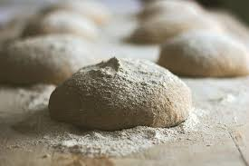
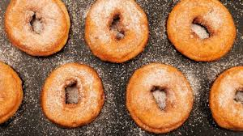

El arte de hacer donas en tu cocina
¿Sabías que las donas tienen un día internacional dedicado a ellas? Cada año, el primer viernes de junio se celebra el Día Internacional de la Dona (International Donut Day). Esta festividad se remonta a la Primera Guerra Mundial, cuando las "Salvadoras de Donas" (Donut Lassies), un grupo de voluntarias de la organización humanitaria The Salvation Army, preparaban y distribuían donas a los soldados en el frente de batalla. Estas deliciosas golosinas se convirtieron en un símbolo de apoyo y comodidad para los soldados, y desde entonces, se ha establecido el Día Internacional de la Dona para honrar su importancia histórica y disfrutar de estas delicias dulces en todo el mundo.
Las donas, esas deliciosas y esponjosas creaciones, han cautivado los corazones (y los paladares) de personas en todo el mundo. ¿Sabías que también puedes convertirte en un maestro donutero y crear estas maravillas en la comodidad de tu propia cocina? En este artículo, te guiaremos paso a paso para hacer donas desde cero, permitiéndote disfrutar de su sabor dulce y tentador siempre que desees. Además, desvelaremos alguna curiosidad sobre las donas que seguramente te sorprenderá.

Ingredientes:
- 2 tazas de harina de trigo
- 1/2 taza de azúcar
- 2 cucharaditas de polvo para hornear
- 1/2 cucharadita de sal
- 1/2 taza de leche
- 2 huevos
- 2 cucharadas de mantequilla derretida
- 1 cucharadita de esencia de vainilla
- Aceite vegetal para freír
Preparacion
- En un tazón grande, tamiza la harina, el azúcar, el polvo para hornear y la sal. Mezcla bien los ingredientes secos.
- En otro recipiente aparte, combina la leche, los huevos, la mantequilla derretida y la esencia de vainilla. Bate la mezcla hasta que esté suave y bien incorporada.
- Vierte la mezcla líquida en el tazón con los ingredientes secos. Mezcla suavemente hasta obtener una masa pegajosa y homogénea.
- Espolvorea harina sobre una superficie plana y voltea la masa sobre ella. Amasa durante unos 5 minutos o hasta que la masa esté suave y elástica.
- Forma una bola con la masa y colócala en un tazón ligeramente engrasado. Cubre el tazón con un paño húmedo y deja que la masa repose y leve en un lugar cálido durante aproximadamente 1 hora, o hasta que haya duplicado su tamaño. 
- Después de que la masa haya levado, vuelve a espolvorear harina sobre una superficie plana y voltea la masa sobre ella. Estírala con un rodillo hasta que tenga un grosor de aproximadamente 1,5 cm.
- Con un cortador de donas o un vaso, corta círculos en la masa. Luego, utiliza un cortador más pequeño o una tapa de botella para hacer los agujeros en el centro de cada dona.
- Coloca las donas en una bandeja enharinada y cúbrelas con un paño húmedo. Déjalas reposar durante otros 15-20 minutos para que vuelvan a levar ligeramente.
- Mientras las donas están levando por última vez, calienta suficiente aceite vegetal en una sartén grande a fuego medio-alto. Asegúrate de que haya suficiente aceite para que las donas floten libremente mientras se fríen.
- Con cuidado, coloca las donas en el aceite caliente utilizando una espátula o una cuchara ranurada. Fríe las donas durante aproximadamente 2-3 minutos por cada lado, o hasta que estén doradas y crujientes.
- Una vez fritas, retira las donas del aceite y colócalas sobre papel absorbente para eliminar el exceso de grasa. 
- Puedes disfrutar de las donas tal como están, o puedes decorarlas con diferentes glaseados y coberturas. Algunas opciones populares incluyen glaseado de azúcar, glaseado de chocolate, azúcar en polvo, canela y azúcar, entre otros.
- Para glasear las donas, espera a que se enfríen un poco y luego sumérgelas en el glaseado de tu elección. También puedes espolvorearlas con azúcar o canela mientras aún están calientes.
- Sirve las donas caseras y disfrútalas con tu familia y amigos. Recuerda que son mejores cuando se consumen el mismo día que se preparan.